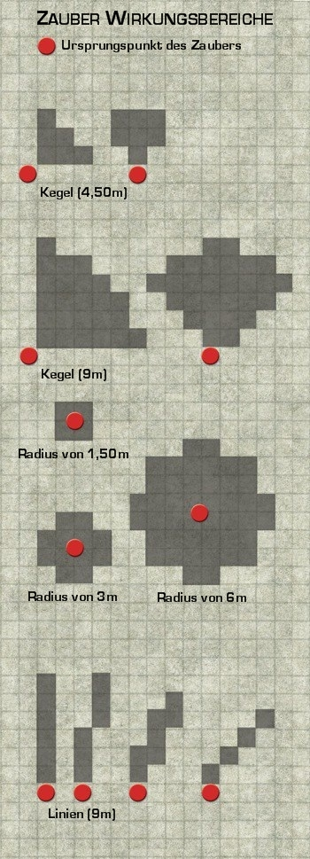

Pathfinder Rollenspiel Referenz-Dokument
| Tabelle: SG für Konzentrationswürfe | |
| Situation | SG für Konzentrationswurf |
| Defensiv zaubern | 15 + doppelter Zaubergrad |
| Beim Zaubern verletzt werden | 10 + verursachter Schaden + Zaubergrad |
| Andauernden Schaden während des Zauberns erleiden | 10 + ½ des verursachten Schadens + Zaubergrad |
| Während des Zauberns von einem Zauber betroffen werden, der keinen Schaden verursacht | SG für Rettungswurf gegen den Zauber + Zaubergrad |
| Während des Zauberns im Ringkampf oder Haltegriff | 10 + KMB desjenigen, der dich in den Ringkampf/ Haltegriff verwickelt hat + Zaubergrad |
| Starke Bewegung während des Zauberns | 10 + Zaubergrad |
| Sehr starke Bewegung während des Zauberns | 15 + Zaubergrad |
| Extrem heftige Bewegung während des Zauberns | 20 + Zaubergrad |
| Wind mit Regen oder Schnee während des Zauberns | 5 + Zaubergrad |
| Wind mit Hagel, Staub oder Schutt während des Zauberns | 10 + Zaubergrad |
| Durch einen Zauber verursachtes Wetter | Siehe Zauber |
| Während des Zauberns verstrickt | 15 + Zaubergrad |
| Ursprüngliche Größe der Kreatur | ST | GE | KO | Neue Größe |
| Mini | +6 | -6 | - | Klein |
| Winzig | +6 | -4 | - | Klein |
| Sehr klein | 4 | -2 | Klein | |
| Groß | -4 | +2 | -2 | Mittelgroß |
| Riesig | -8 | +4 | -4 | Mittelgroß |
| Gigantisch | -12 | +4 | -6 | Mittelgroß |
| Kolossal | -16 | +4 | -8 | Mittelgroß |
 |
| Tabelle: Von magischen Angriffen betroffene Gegenstände | |
| Reihenfolge* | Gegenstand |
| 1. | Schild |
| 2. | Rüstung |
| 3. | Magischer Helm, Hut oder Stirnreif |
| 4. | In der Hand gehaltener Gegenstand (einschließlich Waffe, eines Zauberstabes usw.) |
| 5. | Magischer Umhang |
| 6. | Verstaute oder in der Halterung befindliche Waffe |
| 7. | Magische Armschienen |
| 8. | Magische Kleidung |
| 9. | Magischer Schmuck (Ringe eingeschlossen) |
| 10 | Alles andere |
| * In der Reihenfolge von „wird am wahrscheinlichsten betroffenen“ zu „wird am unwahrscheinlichsten betroffen“ | |
| Zaubergrad | Kosten fürs Eintragen |
| 0. | 5 GM |
| 1. | 10 GM |
| 2. | 40 GM |
| 3. | 90 GM |
| 4. | 160 GM |
| 5. | 250 GM |
| 6. | 360 GM |
| 7. | 490 GM |
| 8. | 640 GM |
| 9. | 810 GM |